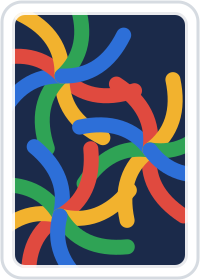

Кит
1 · Цвета
Фон
#0A1216
Поверхность
#13212A
Приподнятая
#1D2D35
Текст
#F2F7F5
Вторичный
#A9BCC0
Разделитель
#23343B
Зелёный
#2EE08C
Сукно
#103D32
Лицо карты
#F7F5EF
Красная масть
#C93632
Чёрная масть
#171B1C
Выключено
#41545C
2 · Типографика — семь начертаний
Партия окончена
1 240
Игры
Создать стол
Количество игроков
Покер · Техасский холдем
Войти смогут только по коду
240
— игровое число: то же начертание, что заголовок раздела
6 · Кнопки
Создать стол
Выйти в игры
Дополнительные настройки →
Компактная
Нужно минимум 2 игрока
Выключена
Во всю ширину
Очень длинная подпись, которая заведомо не помещается ни на один телефон
7 · Иконочные кнопки
8 · Состояние
Нейтрально
Активно
Успех
Выключено
9 · Поля и органы управления
Название стола
С ошибкой
Минимум 80
Выключено
Сегменты — количество игроков
2
3
4
5
6
Степпер
1 000
Тумблер
Ползунок — размер рейза
80
960
5 · Шапка — один компонент в двух видах
Создать стол
Покер · Техасский холдем
Стол TK4Q
Раздача #12
10 · Аватар
И
М
А
Д
48 · 40 · 32 · 24

своё фото — настоящее, из initData; у остальных буква
И
М
А
+3
группа с «+N»
пустое место
11 · Строка игрока
И
Иван
Вы · Хост
М
Мария
Свободное место
12 · Строка рейтинга
1
И
Иван
+248
2
М
Мария
+124
3
А
Алексей
0
4
Д
Дима
−142
13 · Строка стола
Стол TK4Q
3 из 6 · 10/20
И
М
А
Ждём игроков
Стол W9BM
6 из 6 · 25/50
С
Л
+2
Идёт игра
19 · Место за столом — один компонент, шесть состояний
А
Алексей
920
М
Мария
1 000
20
Д
D
Дима
990
А
SB
Анна
980
И
17
Иван
970
С
Сергей
1 000
Л
Лена
1 240
Победа
15 · Статус-бар игры — его не нажимают
Ход Марии
Ожидание действия
16 · Зона действий игры
Сбросить
Уравнять 20
Повысить
21 · Разделитель
Строка сверху
Строка снизу
14 · Липкая зона действий
Создать стол
Выйти в игры
17 · Шторка снизу
Размер рейза
Минимум 80
120
80
960
½ банка
¾ банка
Банк
Всё
Повысить до 120